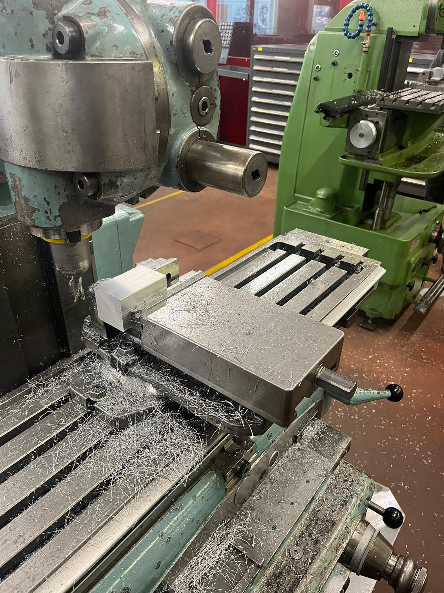

Accueil
Présentation
Notre avancée
Visualisation 3D
Qui sommes-nous ?
Avancée des polymécaniciens : Les polymécaniciens se sont occupés de la fabrication ainsi que du montage des pédales, du volant et du câblage de l’alimentation. Voici quelques images prises pendant le projet.
1 / 5
2 / 5
3 / 5
4 / 5

5 / 5
❮
❯